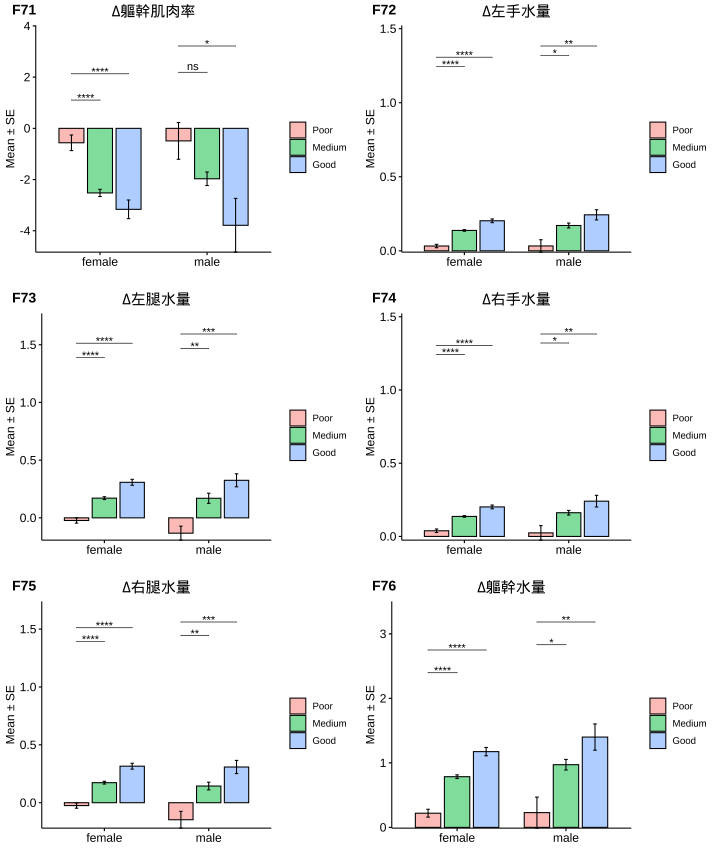

Chapter 2 Glucose Insulin Response Curve(GIRC)
診斷標準：

Pattern分佈：
| I | insulin_ac(SE) | insulin_pc1(SE) | insulin_pc2(SE) | N |
|---|---|---|---|---|
| Pattern I | 7.82 ± 0.51 | 90.99 ± 6.88 | 25.9 ± 1.14 | 64 |
| Pattern II | 11.41 ± 0.33 | 161.21 ± 5.71 | 97.04 ± 3.65 | 286 |
| Pattern III | 11.03 ± 0.36 | 111.29 ± 4.57 | 167 ± 6.99 | 241 |
| Pattern IV | 36.36 ± 1.7 | 278.04 ± 17.98 | 271.03 ± 24.3 | 64 |
| Pattern V | 5.48 ± 1.37 | 22.26 ± 2.9 | 20.58 ± 3.18 | 9 |
| Unclassified | NaN ± NA | NaN ± NA | NaN ± NA | 0 |
| NA | 18.47 ± 2.37 | 9.83 ± 3.55 | 170.53 ± 58.04 | 3 |

| I | insulin_ac(SE) | insulin_pc1(SE) | insulin_pc2(SE) | N |
|---|---|---|---|---|
| Pattern I (Low) | 5.48 ± 0.39 | 59.46 ± 2.67 | 24.74 ± 1.58 | 34 |
| Pattern I (High.0) | 13.58 ± 0.82 | 64.28 ± 5.54 | 25.82 ± 4.07 | 6 |
| Pattern I (High.1) | 7.08 ± 0.63 | 134.56 ± 11.82 | 27.31 ± 2.43 | 14 |
| Pattern I (High.B) | 13.36 ± 0.84 | 153.24 ± 24.33 | 27.94 ± 2.93 | 10 |
| Pattern II (Low) | 6.45 ± 0.35 | 72.83 ± 2.07 | 51.23 ± 1.41 | 42 |
| Pattern II (High.0) | 13.32 ± 0.63 | 70.78 ± 3.23 | 57.23 ± 4.07 | 13 |
| Pattern II (High.1) | 7 ± 0.2 | 138.81 ± 4.8 | 80.85 ± 3.83 | 94 |
| Pattern II (High.B) | 15.79 ± 0.38 | 212.26 ± 9.28 | 125.97 ± 6.14 | 137 |
| Pattern III (Low) | 5.99 ± 0.25 | 55.28 ± 2.11 | 87 ± 4.11 | 77 |
| Pattern III (High.0) | 13.99 ± 0.72 | 62.06 ± 3.67 | 111.33 ± 7 | 30 |
| Pattern III (High.1) | 7.1 ± 0.25 | 128.12 ± 6.3 | 190.04 ± 12.49 | 44 |
| Pattern III (High.B) | 16.27 ± 0.39 | 167.4 ± 7.78 | 242.74 ± 12.56 | 90 |
| Pattern IV | 28.4 ± NA | 81.1 ± NA | 36.7 ± NA | 1 |
| Pattern IV (I-alike, High) | NaN ± NA | NaN ± NA | NaN ± NA | 0 |
| Pattern IV (II-alike, Low) | NaN ± NA | NaN ± NA | NaN ± NA | 0 |
| Pattern IV (II-alike, High) | 37.11 ± 2.05 | 297.78 ± 23.26 | 204.14 ± 19.16 | 36 |
| Pattern IV (III-alike) | 35.65 ± 2.99 | 259.01 ± 28.2 | 368.9 ± 45.34 | 27 |
| Pattern V (T1DM) | NaN ± NA | NaN ± NA | NaN ± NA | 0 |
| Pattern V (Late DM) | 5.48 ± 1.37 | 22.26 ± 2.9 | 20.58 ± 3.18 | 9 |
| Unclassified | 18.47 ± 2.37 | 9.83 ± 3.55 | 170.53 ± 58.04 | 3 |